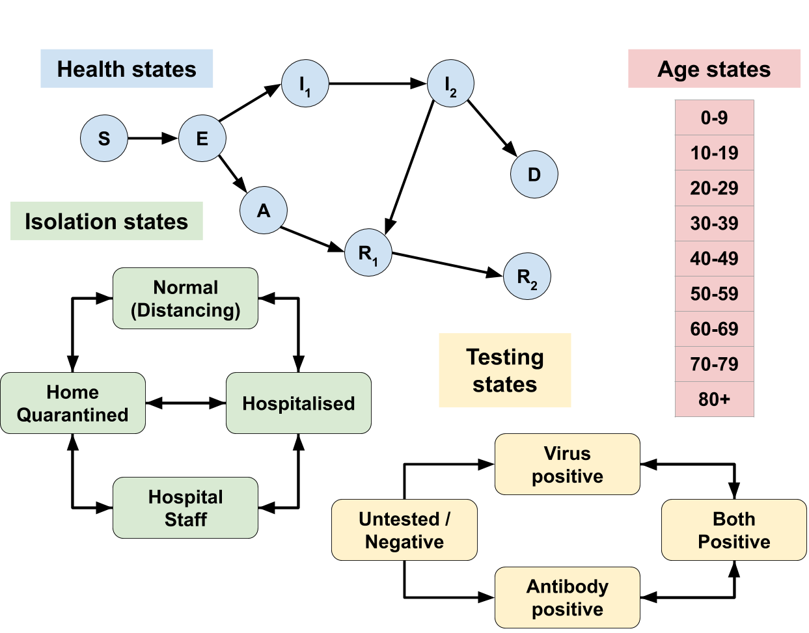

The UK has just announced a test-and-trace strategy to end the lockdown.
How many tests, and of which type, are sufficient to end the lockdown safely?
Large scale testing strategies have universally relied on RT-PCR tests, which are exquisitely sensitive. When performed perfectly, these tests are capable of detecting tens of viral RNA molecules in a given patient sample.
The UK has had enormous difficulty scaling this test. Modifications of RT-PCR which make the test easier to scale now exist - including pooling samples, skipping the RNA extraction step, and collecting samples with spit rather than swabs. To our knowledge, tests with these modifications are not being deployed in the UK.
The easiest tests to scale are likely ‘antigen’ tests. These tests detect the presence of viral protein rather than RNA, and can be performed at ‘point of care’ using lateral-flow-assays, the same technology as used in home pregnancy tests. The tests can therefore be deployed at population scale without the construction and organizational overhead of large centralized testing facilities.
There is concern that antigen tests and modifications of RT-PCR will be less sensitive than the tried-and-true RT-PCR test. Is this concern justified?
It is important to first note that competing tests must be compared with RT-PCR as deployed in practice; due to handling errors and RNA degradation, RT-PCR tests have been observed to have a relatively high false negative rate in the clinic. Assuming that there is a tradeoff between sensitivity and scalability, which kind of tests will get us out of lockdown safely?
We find that the number of daily tests carried out is much more important than their sensitivity, for the success of a case-isolation based strategy.
Our results are based on a Susceptible-Exposed-Infectious-Recovered (SEIR) model, which is age-, testing-, quarantine- and hospitalisation-aware. This model has a number of parameters which we estimate from best-available UK data. We run the model with variations of these parameters - each of which represents a possible present state of circumstances in the UK - in order to test the robustness of our conclusion.
We implemented and investigated a number of potential exit strategies, focusing primarily on the effects of virus-testing based case isolation.
The implementation of our model is flexible and extensively commented, allowing us and others to investigate new policy ideas in a timely manner; we next aim to investigate the optimal use of the highly imperfect antibody tests that the United Kingdom already possesses in large numbers.
There are a number of heterogeneities that our model does not capture. Most important among these may be the effect of exposure level on disease progression. There is evidence that the severity of COVID-19 correlates with the exposure level to SARS-CoV-2; this may significantly impact the effect of home quarantine policies on the spread of severe disease. Additionally, our model does not account for the compliance rate of a given government policy. It is possible that the use of a relatively lower-accuracy test will lead to low compliance with home quarantine issuances.
Summary of results - This section compares four potential (exit strategy) policies across 91 different estimates of the current pandemic burden. Each estimate of current burden is represented by a single curve in each of the figures below.
We first produce the expected result: stopping the lockdown entirely without a clear treatment for or vaccine against COVID-19 results in a massive second wave (Policy B, below). Most of the population becomes infected, eventually resulting in some form of herd immunity, likely at the cost of many more lives than other exit strategies.
Deploying reliable virus testing at the rate of 1 million tests per day, combined with a policy of 14 day home quarantine for positive test cases, has the expected flattening effect on the new infections curve (Policy C, below). However, ~60% of the total population still becomes infected relatively quickly, again yielding herd immunity. The main advantage of this testing strategy is to mitigate the pressure on health services.
Note that the results in Policy C assume that the 1 million ‘reliable’ daily tests are deployed with a practical – not theoretical! – sensitivity of 90% around symptom onset (when patients present the highest viral loads), decreasing to 85% for later stages. Test sensitivity is assumed to be 70% for asymptomatic carriers. Such a test is likely better than is realistically achievable.
For comparison, we investigated the effect of instituting the same case-isolation home quarantine policy with a dramatically less sensitive virus test, but deployed at the level of 5 million tests per day (Policy D, below). We find that this test, despite being so insensitive as to perhaps appear ‘useless,’ is capable of not only flattening the curve, but effectively suppressing it. This prevents a large portion of the population from contracting the disease at all. This supression buys time to develop vaccines and vaccination-based immunity, whilst going about normal levels of social mixing (for those not home quarantined).
The results in Policy D assume that 5 million ‘useless’ daily tests are deployed having only 60% maximum sensitivity around symptom onset, reducing to 50% for later stages of the disease, and 20% for asymptomatic carriers.
One drawback of employing the ‘larger number but lower reliability’ testing strategy is economic cost. We assume a false positive rate of 5% for both tests (likely higher than is realistic!); deploying more tests then causes a higher absolute number of healthy but quarantined false positives. The unnecessary transient quarantining of approximately an extra 3 million people (~2% of England’s population) is arguably justified in the context of the proposed health benefits of suppressing viral transmission, as well as the economic benefits of ending the current lockdown.
The above figures were generated on 22 April 2020, using a full model fit that took place 21 April 2020, which incorporated hospitalisation, testing and mortality data up to and including 14 April 2020. At the time of fitting, more recent data was excluded due to its incompleteness.
Our model can be used to investiage a number of scenarios not described above. Broadly, we sought to develop a robust epidemiological model to forecast the potential effects of specific (exit strategy) policies in the UK, given the uncertainty in the present, through:
This document describes the model, how it uses past data to estimate current scenarios and predict the effects of policies, and describes the technology which allows it to quickly adapt to new incoming data or policy ideas.
Link to repository with source code.

We use a standard SEIR model extended such that we can capture available information both about the disease progression, as well as how accessible various disease states are by testing. Being tested might cause a transition in the Testing State; the rate of such a transition depends both on the Health State (explanatory table) as well the details of the test used.
Our model is age-dependent; individuals are assigned an Age State, which strongly influences most transition rates, and allows policies to be applied differentially to different subsets of the population.
The main policy-making tool is the implementation of quarantining and social distancing in order to keep hospitals and medical staff under tolerable levels of pressure. We represent Isolation States to investigate the effects of various interventions on policy targets relating to hospitalisation rates and economic freedom, while describing the different health outcomes via the Health States.
Additional details follow; see also the heavily commented code which implements the model: notebook
Susceptible people (S) may become Exposed (E) to the virus by mixing with infected people (E, A, I1 and I2).
The infected may progress through the infection Asymptomatic (A) and eventually Recover (R), or become symptomatic and more Infectious (I1, I2), spreading the disease and leading to either Death (D) or Recovery (R1, R2).
Recovered people develop more effective antibodies against the virus, and are considered immune*.
| State | Description | Test outcome |
|---|---|---|
| S | Susceptible | Negative |
| E | Exposed | Very weakly virus positive |
| A | Asymptomatic | Weakly virus positive |
| I1 | Symptomatic early | Strongly virus positive |
| I2 | Symptomatic late | Medium virus positive Weakly IgM antibody positive |
| R1 | Recovered early | IgM antibody positive |
| R2 | Recovered late | IgM+IgG antibody positive |
| D | COVID-related death | May be virus or antibody positive |
Table 1 - Description of Health States and test outcomes
*We plan to consider partial / short-term immunity, see further discussion in Future research.
New infections in a country often initially appear due to inward travel from overseas. We model this very simply by assuming a baseline inward travel rate that declines over time, and that the percentage of returnees infected increases over time. We believe travel is no longer the main driver of new infections in the UK.
For within-country infections, social mixing between infected and susceptible people determines the rate of possible new infections; this is multiplied by the infection stage dependent transmission risk, yielding the number of actual new infections.
The transmission risk in various infection stages is one of the main known unknowns about SARS-CoV-2, and we consider numerous scenarios for it.
Social mixing under normal circumstances has been extensively studied. We use survey-based contact data via http://www.socialcontactdata.org/tools/ (paper) to estimate age-dependent mixing rates of the population.
Mixing rates are also determined by Isolation State. We assume that Home Quarantined and Normal individuals mix with each other at different rates than they mix with themselves, that Hospitalized patients interact with only Hospital Staff, but that Hospital Staff can potentially interact with anyone. Social distancing or lockdown affects the whole population, including those in Normal isolation state.
People with either symptomatic infection, or for other sicknesses (baseline hospitalisation) end up in hospital. People in S health state may return to non-hospitalised S state, however for now we assume that COVID-symptomatic people in I state generally remain in hospital until they are Recovered or Dead.
The rate of hospitalisation for a patient at a given age and infection stage is computed as the product of two independent rates, one based purely on the age (older people are generally more at risk of hospitalisation), and the other purely on how far the patient has progressed into the disease. We estimate the required parameters from hospitalisation data (Hospital Episode Statistics, CHESS - COVID-19 Hospitalisation in England Surveillance System, Imperial Report #8 - Symptom progression of COVID-19).
Our model considers the three major types of SARS-CoV-2 tests, which detect either: (1) viral RNA; (2) viral protein; or (3) human antibodies formed against the virus. We call these tests PCR, antigen, and antibody tests, respectively.
We assume testing – which provides uncertain information about the underlying Health State – may modify the Testing State. This allows health and policy decisions to be made about the tested individual, for example earlier hospitalisation of (at-risk) positive individuals, or strict home quarantining (affecting the Isolation State).
Individuals in the population transition between testing states depending on the type and number of tests administered; disease state of the population at time of administration; and disease state dependent characteristics of the administered test (such as false positive and negative rates). We assumed that the number of each type of test administered each day grows as a sigmoid function, where the antigen and antibody tests become available later, but grow more steeply than PCR tests, due to their relative ease of administration. PCR tests are assumed to be more accurate than antigen tests. Antibody tests are positive much later in the disease than PCR and antigen tests, detecting the immunity formed in Recovered states.
The UK has stockpiled over 17.5 million home antibody testing kits, which are currently not used due to concerns regarding the accuracy of these tests.
In our model, policies can be used to affect the levels of social mixing, to adjust the distribution of tests, and to change the transition rates between quarantine states based on testing states. We describe three major types of policies here.
Social distancing changes the social mixing in the whole population, including those in Normal isolation state.
Unlike other reports, here we do not (yet) wish to disentangle the effects of individual quarantine operations (school closures, working from home, recommended physical distancing), but rather investigate the effects of current full lockdown (in effect since 24 March in the UK), versus testing-based, informed and targeted policies, described below.
The effects of the full lockdown on the age-dependent social mixing matrix are estimated by Hoang et al. (http://www.socialcontactdata.org/tools/), but these are admittedly preliminary results. To address this concern, we used the aforementioned study to define the direction of specific changes, but we treat the magnitude of these changes as an unknown parameter to be estimated from local data.
We investigate the effects of testing-based case isolation via hospitalisation and/or home quarantining. We are particularly interested in the relative utility of easy-to-scale but relatively inaccurate tests (antigen) versus more reliable but difficult-to-scale tests (PCR).
Case isolation is considered both together with social distancing measures above, or as a potential exit strategy by a full release of the lockdown*.
*We plan to include partial lockdown release combined with case isolation, see further discussion in Future research
Antibody test base “proof of immunity” is a potential individual-based exit strategy from lockdown, relying on the fact that truly immune individuals cannot contract or spread the disease, and thus are free to carry on with their normal daily life.
The success of such an exit strategy as the sole option relies upon the overall level of viral penetration, ultimately needing a large portion of the population to be infected to stop the risk (around ~60% immune leads to so-called “herd immunity”). Based on recent backlash around these measures, as well as initial evidence from the Netherlands showing only 3% current penetration, this is unlikely to be a useful goal by itself.
However, another use being considered is immunity passports for key workers (especially NHS staff), who could safely return to work. Using antibody tests in this way bears another major risk, namely potential large number of false positives at low viral penetration, even with very good (only 5% false positives) tests; see this twitter thread for an explanation. False positives are an immense risk for an immunity test, as people believing their positive results could put themselves at unnecessary high risk.
We propose that for such a “key worker immunity passport” policy, the risk of false positives can be significantly reduced if the immunity passports are only given after an initial virus-positive test is confirmed by an antibody-positive test. These two test types can be considered independent as they test different targets, therefore their false positive rates can be multiplied; with a 5% false positive rate each, the risk can be reduced from 1 in 20 to 1 in 400. This can be further mitigated by regular repeated testing of people with immunity passports.
A successful strategy likely combines ideas of the above, as well as potentially other not-yet-described methods.
Importantly, however, there are decisions that can, and should be made now. We consider one such decision to be which test types to purchase and/or scale up the production of.
Modelling needs to achieve two things, (1) explain existing data; and (2) give useful insight into the effect of decisions on the future.
Our overall strategy is as follows; we first try and characterise as many as the model parameters as possible based on historical data, whilst explicitly incorporating estimates of the uncertainty associated with each parameter based how reliably we can estimate them. For example, baseline hospitalisation rates of various age groups in the UK is very well understood, whereas there is increasingly more uncertainty around baseline social mixing, the effects of social distancing, and SARS-CoV-2’s transmission rates.
We represent these levels of uncertainty in all parameters that explain the (near) past; we call these ensemble parameters. We explore millions of settings of such parameters, and weed out the ones that are not consistent with what has happened since the beginning of the pandemic, ie. the observed data.
Finally, we keep a representative smaller sample of potential parameter settings that each represent a plausible scenario in the present, we call this the base ensemble. We then simulate the effects of various policies (varying the policy parameters) for each of the scenarios in our base ensemble, resulting in the “spaghetti plots” included in the Executive Summary (Figure 1).
In order to evaluate whether a scenario generated by ensemble parameters describes the past data sufficiently well, we need to define the past data that we rely on, and what “sufficiently well” means.
We currently use the following two datasets as targets, but are actively looking to include more:
| Observation | Dataset | Link |
|---|---|---|
| Daily in-hospital deaths in England of people with positive virus tests in each age group |
NHS England COVID-19 daily deaths | Link |
| Daily new positive virus tests in England of patients admitted to NHS hospitals |
COVID-19 Hospitalisation in England Surveillance System Only daily aggregate at country level* |
Link to request access |
In order to evaluate whether a parameter setting describes reality sufficiently well, we calculate for each day and age group the likelihood of observing the real data, where the data is assumed to be distributed around the simulated value as a negative binomial distribution with an alpha dispersion parameter of 2. We consider scenarios above a minimum threshold to be “plausible”.
We first choose parameter sets to investigate at random, given a set of (wide) prior assumptions about the individual parameters or combinations thereof. We perform full simulation for each parameter set and compute their likelihoods. When choosing the next set of parameters to investigate, we can estimate whether a parameter set may or may not represent a plausible scenario without actually doing the full simulation. For this, we do Gaussian Process Regression with a random subset of data approximation as a surrogate to estimate the likelihoods – from these estimates a selection function chooses which parameter sets worth fully simulating. This is similar to Sequential Model Based Optimisation (SMBO). Unlike in SMBO we do not look for a single “best fit” scenario, but rather want a broad picture of all “plausible” scenarios. We therefore use a selection function that prioritises exploration rather than optimisation.
The set of all plausible scenarios are the full ensemble.
*More precisely the daily count data from the following columns was aggregated to national level, broken down by coarse-grained age groups. This data does not contain any personally identifiable data. Columns used were:
For policy modelling we select a representative subset of the full ensemble computed above as the base ensemble. We then define a set of policies we wish to investigate (including precise numerical parameter settings, such as the ratio of antigen and antibody tests produced, how many of them will be made available by what date, or what ratio of tests should be given to people already tested to screen for false positives / negatives), this results in a set of policy parameters.
We investigate the effects of each policy parameter set on each scenario in the base ensemble, and summarise the “effectiveness” of a policy by the percentage of scenarios in which they achieve particular policy target goals, such as keeping the peak hospitalisations under a threshold for the whole year, or keeping the overall death toll under a limit.
One of the important requirements of models describing the pandemic is to be able to adapt very quickly and incorporate not only new data, but also new ideas. Experienced programmers will likely be horrified by the single ipython notebook that implements the whole model and the estimation of the full ensemble; however this also vastly increases its portability and “hackability”, meaning new ideas can be quickly incorporated.
At the moment (if the base state space structure remains unchanged), the model is very robust to including new kinds of transitions (such as fading immunity) or implementing a number of new policies. The code automatically builds the computation and parameter graphs, reducing potential errors, and making the setting of policy parameters and priors of ensemble parameters very accessible and convenient.
It is also very easy to include new datasets and corresponding likelihoods, so long as one of the state tensor projections results in the same type of observed data; this is often the case due to our rich state representation.
The most difficult thing to change currently is the basic state space structure, but even this is very possible without changing many of the main functions, as they all try to access only their own relevant tensor slices, thus being unaffected by adding other types of states. Regardless, such edits should be done carefully, and results double checked by temporarily disabling transitions to/from the newly added state(s), and verifying that the code after the changes reproduces the original results.
Due to the relatively high computational needs (5 min / CPU core / simulation for 400 days forward simulation), we deploy the model on AWS EC2. In the current setup we use a distributed dask-scheduler on a main node and a dask-ssh cluster connected to worker nodes. All nodes use the official Miniconda AMI built on Amazon Linux, and the conda environment can be reproduced from the environment.yml file, then distributed to any worker nodes via conda-pack. Results are stored on an AWS Elastic File System mounted at /mnt/efs, written solely by the master node (as the file system failed to handle concurrent writing by all worker processes).
For both the full ensemble as well as any policy ensemble runs, a separate timestamped folder is created, containing a large number of ... .npy files, but importantly also a few paramTable* hdf files storing pandas tables. These store all non-default parameters used, as well as which parameter sets results in which .npy file (out_fname column). Default parameters are stored in a nested dictionary following the computation graph, paramDict_default.cpkl.
Using the paramTable, one can access the results of any simulation by loading the corresponding .npy file, which simply stores a snapshot of the state tensor evaluated at the start of every simulation day, with time being the last dimension. Similarly for each state we store the “new arrivals in this state today” at the end of every simulation day, as this corresponds to much of the published data (which largely focuses on “new X” instead of “current X”, making it less trivial to compare with a state model); this can be loaded via using out_fname[:-4] + "_newOnly.npy" file path for any parameter set in the paramTable. Once the simulated results are loaded, it is trivial to produce plots of arbitrary tensor projections or slices.
We are currently finishing work on a fully interactive dashboard, that enables users to investigate and compare a set of policies from one such paramTable by running the dashboard with the -r <RUN_FOLDER> flag. We also aim to provide a web service running pre-created dashboards for non-technical users.
We are also working on other tools that help investigate in which scenarios certain policies work well or fail.
In our model, the Hospital Staff are never home quarantined / hospitalised themselves; our current representation is sufficient to keep track of their different social mixing levels and infection rates, but ideas are welcome for a better representation.
We do not account for non-hospital COVID-related deaths. Our initial assumption on 01 April was that all people get hospitalised before dying to COVID-19, but recent ONS and media reports challenge this assumption, and will need to be incorporated soon – a difficult task given the lack of reliable data.
Finally there are a lot of potential things to consider in terms of potential future policies, and we are looking to quickly implement any ideas that are considered by decision makers, and we hope to provide immediate feedback on their feasibility.
For further clarity, we summarised some of the key assumptions in the current implementation, why we did not prioritise a more detailed implementation given our current resources, and how they could be included in the future.
| Assumption | Why not a priority? | Future Implementation |
|---|---|---|
| Long-lasting immunity | - Few known cases of reinfection - Lack of data on length of immunity |
Add slow R \(\rightarrow\) S transition |
| Modelling at national level | - Widely and evenly spread pandemic | Model regions and internal travel |
| Working and self-isolating population are mixing at an average rate | - The average mixing describes virus spread sufficiently - Available social mixing and testing data does not differentiate |
Add key (non-hospital) workers as a separate population |
| Constant rate of contact throughout longterm lockdown | - Lack of data available | Estimate compliance with lockdown and add as time-series varying the efficiency of lockdown |
| No explicit model of tracing | - Tracing is not yet happening at scale in the UK - High uncertainty in potential implementations |
Include as more efficient distribution of available tests / quarantining of untested people. |
Table 2 - Assumptions and future implementation
We would be extremely happy for others to adapt the model to data and situations in other countries, which we could not yet do, as it requires high levels of country-specific domain knowledge that we do not possess.
The code is fully available and thoroughly commented; you are welcome to fork the repository and try it for your own purposes. At this time we cannot offer technical support.
We welcome any carefully considered suggestions, please discuss any improvements in issues.
If you are aware of a dataset we should integrate, please discuss in the issues. We believe most available data should be very easily modelled by using the appropriate projection of output tensors alongside the correct likelihood.
If you can provide the data reference alongside an automatic python preprocessing script (refreshing it from the source on every run) as well as the appropriate likelihood function, it will have a high chance of being included.
Gergo Bohner and Gaurav Venkataraman initially surveyed the COVID-19 test types and their parameters, and found the need for a model that optimally allocates tests based on policy goals.
Gergo Bohner implemented the model, fitting and policies.
Gaurav Venkataraman does the literature review, advises on modelling and policy ideas, handles communication and outreach.
Harrison Wilde designed and implemented data pipelining for analysis of the models and the visualisation dashboard;
Jonathan Bechtel provided design ideas and technical assistance.
Sebastian Vollmer handles data governance, while contributing to academic outreach and idea review.
We thank Bilal Mateen for comments.
We gratefully acknowledge multiple valuable discussions with John Aston, Matt Keeling, Ian Hall, Thomas House and Simon Frost.
We thank Public Health England for providing access to CHESS data to the Warwick Research Group.
We thank Amazon Web Services for providing the computational resources for the project via their AWS Cloud Credits for Research program at short notice.